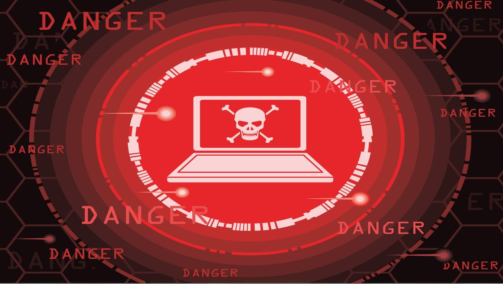
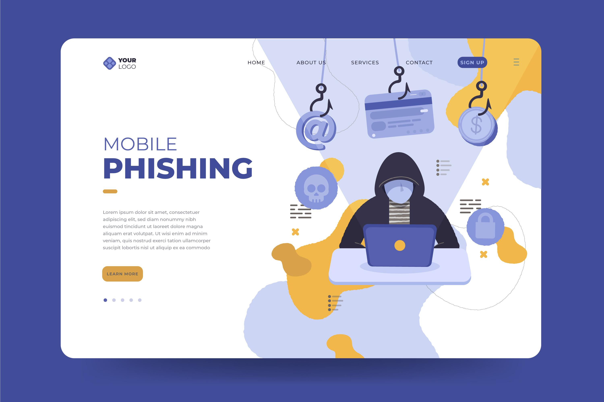
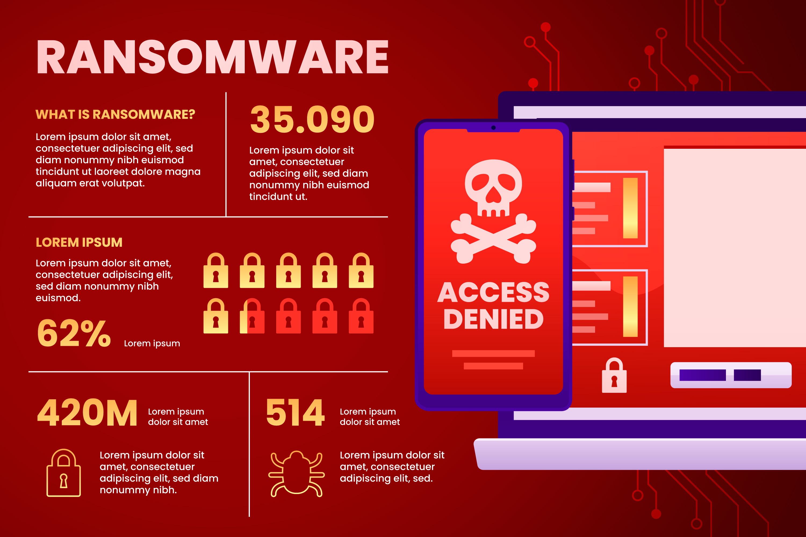
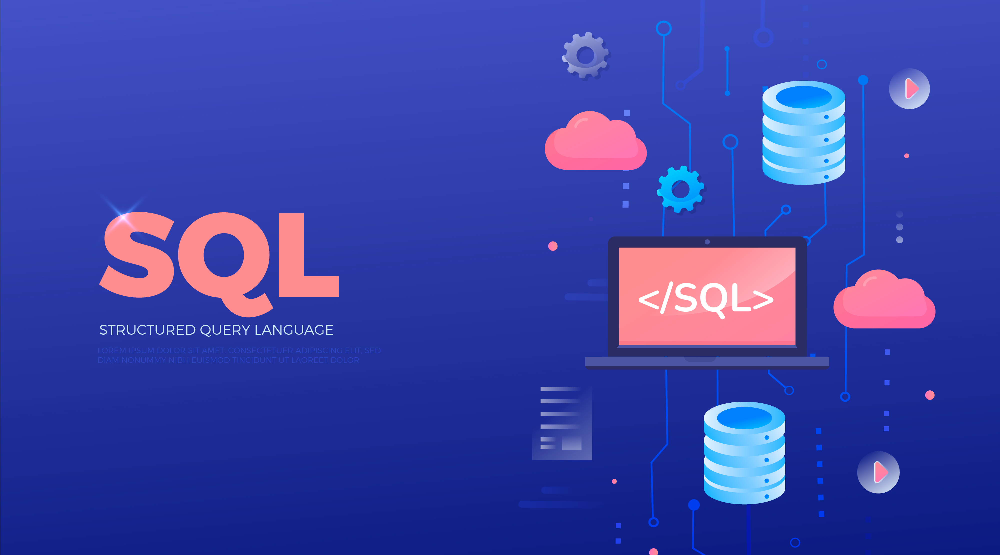

This platform allows users to simulate cyberattacks and defenses through interactive scenarios on a virtual machine. It provides hands-on experience with real-world cybersecurity challenges, helping users learn and practice effective defense strategies. The platform is designed for both beginners and advanced users to enhance their skills in a safe, controlled environment.
Get StartedPut everything you've learned into practice in our realistic scenario-based labs, improving your capabilities.
Follow the scenario and conduct your investigation. Uncover the actions taken by the malicious actor.
Follow the scenario and conduct your investigation. Uncover the actions taken by the malicious actor.
Earn achievements, ranks, badges and titles. Show off your hard work and showcase your skills.

A web server is overwhelmed with traffic from multiple sources, causing it to crash. The team must identify the attack, block malicious IPs, and restore service. Image Idea: A server icon surrounded by red warning symbols and a flood of network lines, symbolizing the traffic overload.

A user receives a suspicious email with a malicious link. The team must investigate the email headers, detect the phishing attempt, and secure the user’s account. Image Idea: An envelope icon with a hook inside, or a "Warning: Suspicious Email" pop-up.

A workstation is locked with a ransom note demanding cryptocurrency. The team needs to isolate the infected machine, check logs for the attack vector, and restore from a backup. Image Idea: A locked computer screen with a skull symbol and a "Pay Now" button.

An attacker inputs malicious SQL code into a website’s login form, trying to access the database. The team must patch the vulnerability and review logs for unauthorized queries. Image Idea: A broken database icon with lines of code and a red exclamation mark.
The SOC (Security Operations Center) Simulator is a cybersecurity training platform designed to help security teams practice responding to real-world cyber threats. The platform will simulate attacks and defensive measures in a controlled environment, providing users with hands-on experience in threat detection, incident response, and network forensics.
Email: support@socsimulation.com
Phone: +123 456 7890